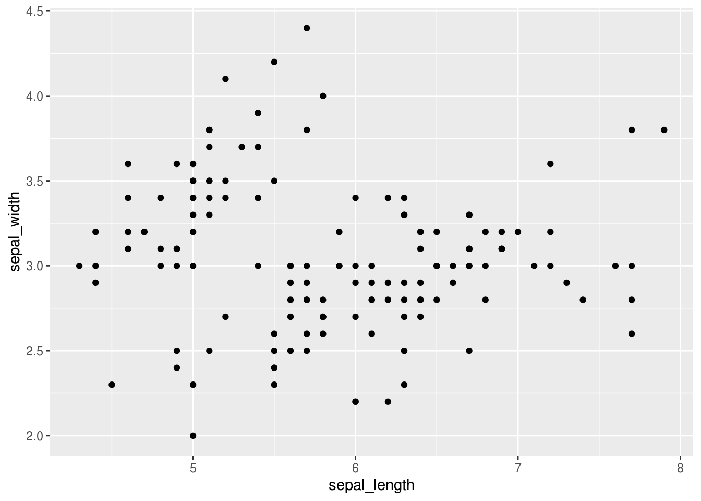
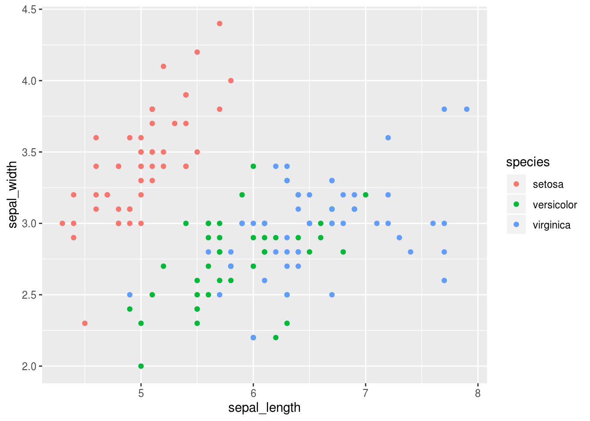
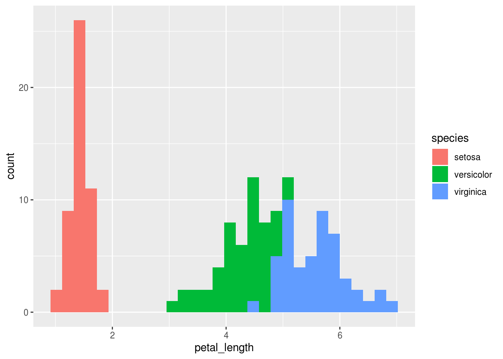
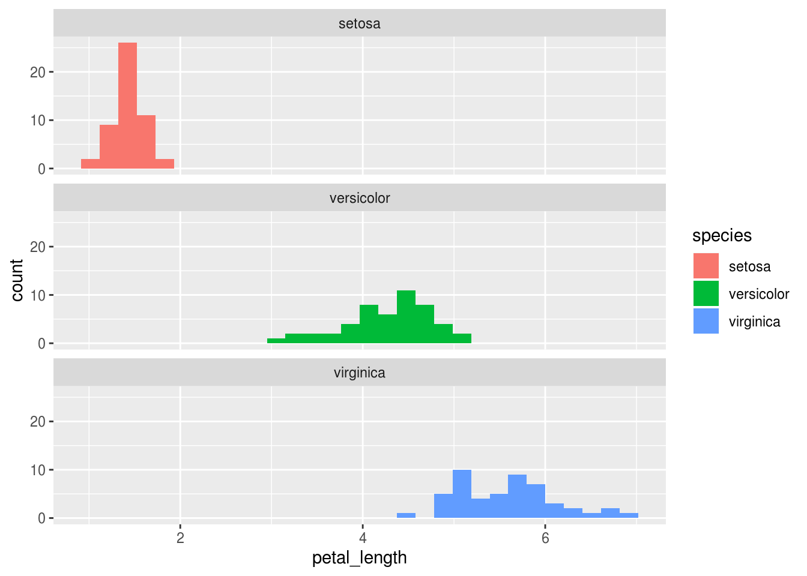
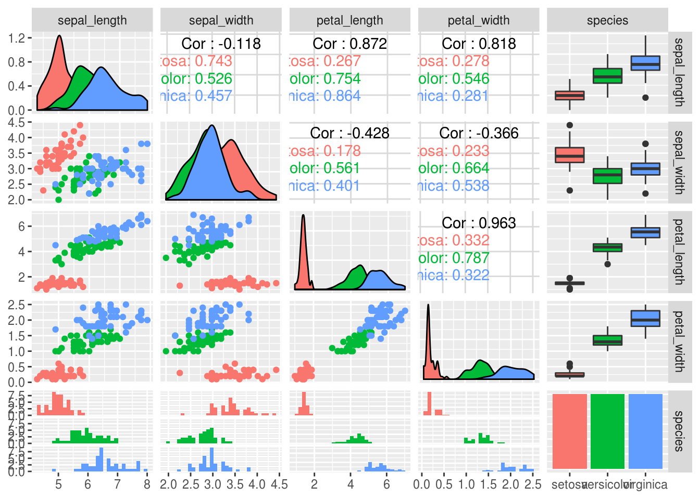

Lesson objectives
- Main goal:
- To give students an overview of the capabilities of R and how to use the R Notebook for exploratory data analyses.
- Secondary goals:
- Learn about the differences between R and Excel.
- Learn some basic R commands.
- Learn about the markdown syntax and how to use it within the R Notebook.
Lesson outline
Total lesson time: 1 hour
- Working with computers (10 min)
- Programming in R (45 min)
- The Basics (10 min)
- RStudio and the R Notebook (5 min)
- Creating and assigning objects (5 min)
- Plotting (10 min)
- Saving data and generating reports (5 min)
- R Markdown (10 min)
Before we get into more practical matters, I want to provide a brief background to the idea of working with computers. Essentially, computer work is about humans communicating with a computer by modulating flows of current in the hardware in order to get the computer to carry out advanced calculations that we are unable to efficiently compute ourselves. Early examples of human computer communication were quite primitive and included physically disconnecting a wire and connecting it again in a different spot. Luckily, we are not doing this anymore; instead we have programs with graphical user interfaces with menus and buttons that enable more efficient human to computer communication.
An example of such a program that I think many of you are familiar with is spreadsheet software such as Microsoft Excel and LibreOffice Calc. Here, all the functionality of the program is accessible via hierarchical menus, and clicking buttons sends instructions to the computer, which then responds and sends the results back to your screen. For instance, I can click a button to send the instruction of coloring this cell yellow, and the computer interprets my instructions and then displays the results on the screen; in this case, the cell is highlighted yellow.
Spreadsheet software is great for viewing and entering small data sets and creating simple visualizations fast. However, it can be tricky to design publication-ready figures, create automatic reproducible analysis workflows, perform advanced calculations, and reliably clean data sets. Even when using a spreadsheet program to record data, it is often beneficial to have some some basic programming skills to facilitate the analyses of those data.
Typing commands directly instead of searching for them in menus is a more efficient approach to communicate with the computer and a powerful way of doing data analysis. This is initially intimidating for almost all people, but if you compare it to learning a new language, the process becomes more intuitive: when learning a language, you would initially string together sentences by looking up individual words in the dictionary. As you improve, you will only reference the dictionary occasionally since you already know most of the words. Eventually, you will throw the dictionary out altogether because it is faster and more precise to speak directly. In contrast, graphical programs force you to look up every word in the dictionary every time, even if you already know what to say.
You might think it is quite tricky to learn computer languages, but it is actually not! You already know one: mathematics is often written the same way as you would write it by hand, both in Excel and R.
This is much more efficient than typing “Hi computer, could you please add 4 and 5 for me?”. Formal computer languages also avoid the ambiguity present in natural languages such as English. You can think of R as a combination of math and a formal, succinct version of English.
E.g. Create a sequence of the numbers zero to thirty.
## [1] 0 1 2 3 4 5 6 7 8 9 10 11 12 13 14 15 16 17 18 19 20 21 22 23 24
## [26] 25 26 27 28 29 30E.g. Create a sequence of the numbers zero to thirty and calculate the average value of this sequence.
## [1] 15In my experience, learning programming really is similar to learning a foreign language - you will often learn the most from just trying to do something and receiving feedback (from the computer or another person)! When there is something you can’t wrap you head around, or if you are actively trying to find a new way of expressing a thought, then look it up, just as you would with a natural language.
With that background to some of the concepts of programming, let’s compare the workflow of analyzing a data set in R vs in Excel. Pull up Excel and an R console next to each other. In Excel, we open a file via ‘File -> Open -> Navigate to file’. You can conceptualize this as if there is a function file.open() for which you need to specify a file location, (file.open(/home/joel/iris.csv). In R this looks similar, it is read.csv('/home/joel/iris.csv'), so it is pretty much the same. The only differences are that slightly different words are used, and you type them in instead of clicking your way to them.
When you open a file in Excel, it will immediately display the content in the window. Likewise, the R console will display the information of the data set when you read it in. This sample data set that we are using for this class describes the length and width of sepals and petals for three species of iris flowers.
However, to do useful and interesting things to data, we need to assign values to objects. Objects are also referred to as variables, and although there technically are minor differences between them1, we will use them interchangeably in this class. To create an object, we need to give it a name followed by the assignment operator <-, and the value we want to assign:
## [1] 8<- is the assignment operator. It assigns values on the right to objects on the left. So, after executing x <- 3, the value of x is 3. The arrow can be read as 3 goes into x.
Let’s save our data into an object called iris
## Parsed with column specification:
## cols(
## sepal_length = col_double(),
## sepal_width = col_double(),
## petal_length = col_double(),
## petal_width = col_double(),
## species = col_character()
## )## # A tibble: 150 x 5
## sepal_length sepal_width petal_length petal_width species
## <dbl> <dbl> <dbl> <dbl> <chr>
## 1 5.1 3.5 1.4 0.2 setosa
## 2 4.9 3 1.4 0.2 setosa
## 3 4.7 3.2 1.3 0.2 setosa
## 4 4.6 3.1 1.5 0.2 setosa
## 5 5 3.6 1.4 0.2 setosa
## 6 5.4 3.9 1.7 0.4 setosa
## 7 4.6 3.4 1.4 0.3 setosa
## 8 5 3.4 1.5 0.2 setosa
## 9 4.4 2.9 1.4 0.2 setosa
## 10 4.9 3.1 1.5 0.1 setosa
## # … with 140 more rowsThese values are now stored in this R session and we can access them by the name iris. More formally, we can say ‘the data has been assigned to the variable iris’.
The arrow <- is known as the assignment operator and simply means that the output from the right hand side is stored in the variable name that you write on the left hand side.2 Now we can simply ask R to calculate the mean of the data frame iris, column petal_length:
## [1] 3.758The $ is the syntax used in R to indicate that you want to access a column in the data frame. If we want to know more than just the mean, one useful thing with R is that we don’t have to calculate these things one by one. Rather, we can actually get an overview of all the columns by asking R to provide a summary of iris.
## sepal_length sepal_width petal_length petal_width
## Min. :4.300 Min. :2.000 Min. :1.000 Min. :0.100
## 1st Qu.:5.100 1st Qu.:2.800 1st Qu.:1.600 1st Qu.:0.300
## Median :5.800 Median :3.000 Median :4.350 Median :1.300
## Mean :5.843 Mean :3.057 Mean :3.758 Mean :1.199
## 3rd Qu.:6.400 3rd Qu.:3.300 3rd Qu.:5.100 3rd Qu.:1.800
## Max. :7.900 Max. :4.400 Max. :6.900 Max. :2.500
## species
## Length:150
## Class :character
## Mode :character
##
##
## You can already see how it will save you time to use R instead of typing these calculations separately in Excel.
Before we continue, we are going to switch from using the R console to using an interface called RStudio. RStudio includes the R console, but also many other convenient functionalities, which makes it easier to get started and to work with R. When you launch RStudio, you will see four panels:
iris, just like before, or we can also view the iris variable in our environment tab, which shows it to us in a spreadsheet or table format.? in front of a function. Here, the documentation is formatted in a way that is easier to read and also provides links to the related sections.Help -> Cheatsheets!In the RStudio interface, we will be writing code in a format called the R Notebook. As the name entails, this interface works like a notebook for code, as it allows us to save notes about what the code is doing, the code itself, and any output we get, such as plots and tables, all together in the same document.
When we are in the Notebook, the text we write is normal plain text, just as if we would be writing it in a text document. If we want to execute some R code, we need to insert a code chunk. You insert a code chunk by either clicking the “Insert” button or pressing Ctrl + Alt + i simultaneously. You could also type out the surrounding backticks, but this would take longer. To run a code chunk, you press the green arrow, or Ctrl + Shift + Enter.
## [1] 1 2 3 4 5 6 7 8 9 10 11 12 13 14 15 16 17 18 19 20 21 22 23 24 25
## [26] 26 27 28 29 30 31As you can see, the output appears right under the code block. This is a great way to perform explore your data, since you can do your analysis and write comments and conclusions right under it all in the same document. A powerful feature of this workflow is that there is no extra time needed for code documentation and note-taking, since you’re doing your analyses and taking notes at the same time. This makes it great for both taking notes at lectures and to have as a reference when you return to your code in the future. We will delve deeper into some of the neat features about the R notebook towards the end; for now, let’s get back into learning about R.
In R, it is straightforward to explore your data by creating nice looking plots. For instance, to make a scatter plot, we first tell R that we want to make a plot of the iris data frame, and we want the aesthetics of this plot to be that sepal_length is on the x axis and sepal_width is on the y-axis. Finally, we specify that we want this to be a plot of points, i.e. a scatter plot.

This plot shows up in the plot panel in RStudio, which is far more convenient than having it show up as a separate window. You can already see that there seems to be at least some structure to the data. There is one cluster of points up the left corner and at least one in the lower right corner. Hmmmm, I wonder if these correspond to the different species of flowers… Let’s find out, by coloring the points according to which species they are.

Likewise, it would be similarly easy to make a histogram of the petal_length and color it according to the species.
## `stat_bin()` using `bins = 30`. Pick better value with `binwidth`.
And we could get fancier by instructing R to split this plot in vertically stacked facets, or subplots, with one species in each facet.
ggplot(iris, aes(x = petal_length, fill = species)) +
geom_histogram() +
facet_wrap(~ species, dir = 'v')## `stat_bin()` using `bins = 30`. Pick better value with `binwidth`.
Finally, if you don’t have a clear idea of what you are looking for in a data set – such as if you are exploring publicly available data that you have not generated yourself – then it can be useful to visualize the relationships between all the variables to get an overview of the data.
## `stat_bin()` using `bins = 30`. Pick better value with `binwidth`.
## `stat_bin()` using `bins = 30`. Pick better value with `binwidth`.
## `stat_bin()` using `bins = 30`. Pick better value with `binwidth`.
## `stat_bin()` using `bins = 30`. Pick better value with `binwidth`.
This plot is a bit overwhelming, and the purpose here is not to produce a publication ready figure. You can see that many of the labels are overlapping and not everything fits in the plotting window. We can tweak these properties, which we will get into later in the course. But even in its slightly rough form, this is a powerful data set overview for your own analyses.
Hopefully, these examples have giving you an idea of how simple and powerful it is to use R for your exploratory data analyses. In a few lines of code, we have made some really nice plots, some of which are not even imaginable to create in Excel.
To save our code and graphs, all we have to do is to save the R Notebook file, and the we can open it in RStudio next time again. However, if we want someone else to look at this, we can’t just send them the R Notebook file, because they might not have RStudio installed. Another great feature of R Notebooks is that it is really easy to export them to HTML or PDF documents with figures and professional typesetting. There are actually many academic papers that are written entirely in this format and it is great for assignments and reports: I have used this myself for some of my progress updates to my supervisor. Since R Notebook files convert to HTML, it is also easy to publish simple good-looking websites in it – for example, the syllabus website for this course is made this way via a template that Luke set up.
Let’s try to convert this new document. First, let’s go through it and see what we expect the output to include. First we see this intro section here – this is called the yaml-block, and it’s where you specify the title of your document, what kind of output you want, and a few other things that we will try later. Then we have a heading, a link, some bold text, and a few code blocks. OK, let’s see what this looks like. To create the output document, we poetically say that we will knit our R Markdown into the HTML document. Luckily, it is much simpler than actually knitting something. Simply press the Knit button here and the new document will be created.
As you can see in the knitted document, the title showed up as we would expect, the lines with pound sign(s) in front of them were converted into headers and we can see both the code and its output! So the plots are generated directly in the report without us having to cut and paste images! If we change something in the code, we don’t have to find the new images and paste it in again, the correct one will appear right in your code.
The text format we are using in the R Notebook is called R Markdown. This format allows us to combine R code with the Markdown text format, which enables the use of certain characters to specify headings, bullet points, quotations and even citations. A simple example of how to write in Markdown is to use a single asterisk or underscore to emphasize text (*emphasis*) and two asterisks or underscores to strongly emphasize text (**strong emphasis**). When we convert our R Markdown text to HTML or PDF, these will show up as italics and bold typeface, respectively. If you have been writing on online forums, or popular chat services, such as WhatsApp, you might already be familiar with this style of writing. In case you haven’t seen it before, you have just learnt something about WhatsApp in your quantitative methods class…
To get more familiar with the Markdown syntax, let’s open a new R Notebook. RStudio already includes a template when you create new documents that gives you some instructions on how to use the syntax. We can see some of the formatting rules that we just mentioned. Let’s add some emphasized text and see how it renders. Using the Markdown syntax we can organize our document with headings and subheadings, each indicated by a variable number of hash symbols.
Furthermore, if we want to change the style of our output document, it is quite easy to do so. Let’s add a subheading first, and a table of contents.
Now we realize that we want to include numbers in the report to keep with the departmental guidelines, so let’s add those.
We can alter the style of our report by adding a theme.
---
title: "HTML output demo"
output:
html_document:
toc: true
number_section: true
theme: united
---And finally we remember that we need to hand in our assignments as PDF-files, so let’s create a PDF instead of a HTML-document.
If you want to learn more about R Markdown, you can read the cheat sheets in RStudio and RStudio Markdown reference online.
Hopefully, this has given you an idea of how powerful and time-saving R can be for your data analysis, and how we will work with it in this class using the R Notebook. The first assignment will be available on Quercus today, and it includes a few questions about RStudio and R Markdown. 1 / 4 marks on this assignment is to fill in a survey about your background knowledge. This is so that we can adjust the pace and content of the lectures and to divide you into groups accordingly for the class project later this fall. The link to the survey will be posted on Quercus; please take 10 minutes to fill it out now.
https://cran.r-project.org/doc/manuals/r-release/R-lang.html#Objects).↩
For historical reasons, you can also use = for assignments, but not in every context. Because of the slight differences in syntax, it is good practice to always use <- for assignments. Note that in RStudio, typing Alt + - will write <- in a single keystroke.↩
This work is licensed under a Creative Commons Attribution 4.0 International License. See the licensing page for more details about copyright information.